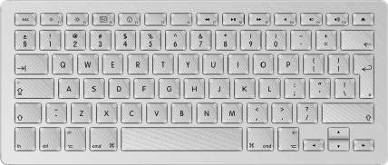

| What you see on the screen is only a representation of your
keyboard layout with a given keyboard type. Keyboard layouts work
with any keyboard type, so don’t panic if it isn’t what you
expect! When you open a keyboard window, Ukelele does its best to work out what actual (hardware) keyboard you are using. It isn't always successful, especially if you have a newer model of Mac, or are using a non-Apple keyboard. Go to the Keyboard menu and choose Keyboard Type... This brings up a dialog to choose what kind of keyboard to display on screen. You can choose any of those in the list on the left, and a description will appear below. The important thing is the coding popup button on the right. If your keyboard looks like this: then it is an ANSI keyboard, the kind you get in USA, Australia, UK, etc. If it looks like this:  then it is an ISO keyboard, the kind you get in Europe and elsewhere (apart from Japan). Note the extra key in the lower left, between shift and Z. |